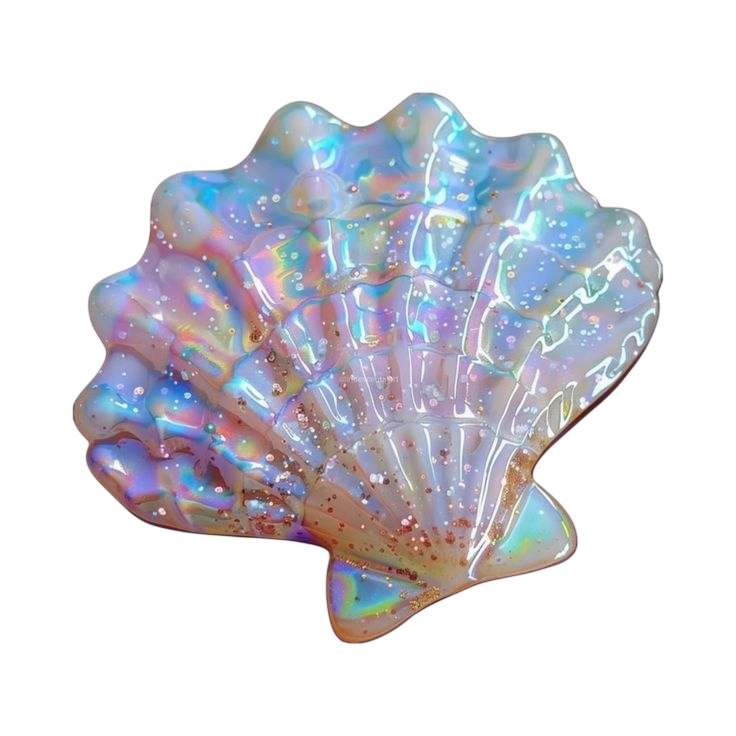
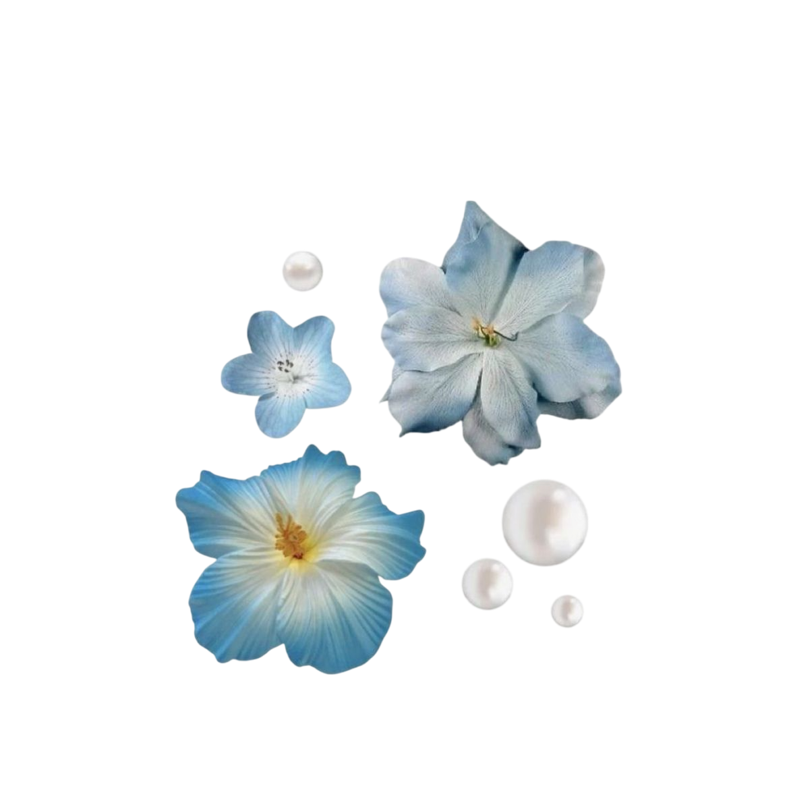
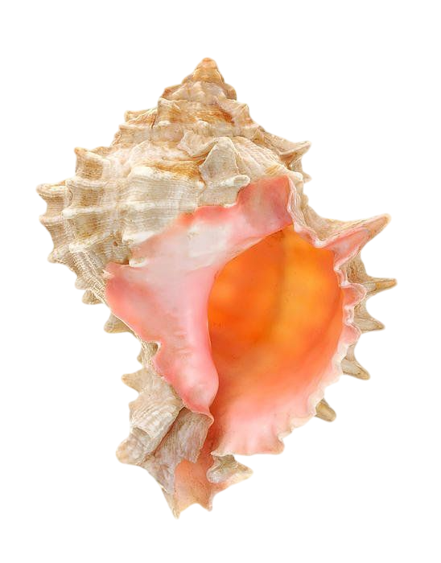

Этот аспект говорит о крепкой и надежной дружбе, в которой много взаимного уважения, поддержки и чувства ответственности друг за друга. Вы хорошо дополняете друг друга: одна помогает сохранять порядок, стабильность и уверенность, а другая вдохновляет на развитие, новые идеи и более смелое самовыражение.
Такая дружба особенно хорошо проявляется в совместных делах, учебе, работе и любых проектах, где важны организованность и доверие. Вы умеете поддерживать друг друга не только эмоционально, но и в реальных жизненных задачах.
Между вами может быть ощущение надежности и спокойствия — именно той дружбы, которая проходит проверку временем.
Этот аспект показывает, что вам важно учиться понимать не только слова, но и чувства друг друга. Одна из вас может больше опираться на логику и рациональность, а другая — на эмоции, настроение и внутренние ощущения.
Иногда из-за этого возникают недопонимания: кому-то может казаться, что другая слишком серьезная и сдержанная, а другой — что не хватает практичности и ясности. Но именно через такие различия вы учитесь искать баланс и лучше слышать друг друга.
Главное здесь — честный разговор, уважение к разным способа выражать заботу и умение находить компромиссы.
Этот аспект делает общение очень активным и живым, но временами может приносить споры и эмоциональные обсуждения. У каждой из вас сильный характер и своя точка зрения, поэтому дискуссии могут быть яркими и запоминающимися.
Одна из вас может действовать быстрее и решительнее, а другая предпочитает сначала всё хорошо обдумать. Из-за этого иногда появляется раздражение или ощущение, что вас не до конца понимают.
Но при зрелом подходе этот аспект помогает создать сильный и эффективный союз: вы учитесь терпению, уважению к чужому темпу и умению превращать споры в полезный обмен мнениями.
Этот аспект может создавать небольшую путаницу в общении: одна из вас мыслит более конкретно и рационально, а другая больше доверяет интуиции, эмоциям и внутреннему ощущению ситуации.
Иногда из-за этого может казаться, что одна слишком практична, а другая — слишком мечтательна. Возникают недосказанности, разные ожидания или ощущение, что вас понимают не совсем так, как хотелось бы.
При открытом и спокойном общении этот аспект помогает развивать терпение, чуткость и способность принимать разные взгляды на мир.
Этот аспект делает дружбу более серьезной и сдержанной, чем легкой и спонтанной. Иногда между вами может ощущаться дистанция или сложности в открытом проявлении эмоций, особенно в начале общения.
Одна из вас может казаться более строгой и требовательной, а другая — более свободной и эмоциональной. Из-за этого временами бывает непросто сразу почувствовать полное взаимопонимание.
Но именно такой аспект помогает строить крепкие, взрослые и надежные отношения, где ценятся не громкие слова, а реальные поступки, верность и стабильность.
Этот аспект считается очень благоприятным для дружбы. Между вами легко возникает ощущение свободы, легкости и настоящего взаимопонимания. Вы можете быть не только близкими подругами, но и настоящими единомышленницами.
Вас объединяют общие интересы, желание развиваться, творческий подход к жизни и стремление к новым впечатлениям. Вы вдохновляете друг друга, поддерживаете идеи и помогаете раскрывать сильные стороны.
Такая дружба часто сопровождается активной социальной жизнью, большим количеством общих знакомых и ощущением, что рядом человек, с которым действительно интересно идти по жизни.
Этот аспект делает дружбу глубокой, искренней и очень значимой для обеих. Между вами может быть сильное доверие, ощущение внутренней близости и готовность поддерживать друг друга даже в непростые периоды жизни.
Вы помогаете друг другу лучше понимать себя, становиться увереннее и эмоционально сильнее. Одна может мягко привносить гармонию и спокойствие, а другая — мотивировать на внутренние перемены и личностный рост.
Такая дружба часто ощущается как важная и судьбоносная: в ней много поддержки, честности и настоящей вовлеченности в жизнь друг друга.
Этот аспект показывает, что у вас может быть очень разный темперамент и способ действовать. Обе вы сильные, активные и умеете отстаивать свою точку зрения, поэтому иногда споры могут возникать даже из-за мелочей.
Каждая из вас привыкла действовать по-своему, и попытки переубедить друг друга не всегда проходят легко. Особенно это заметно в бытовых вопросах, совместных делах или ситуациях, где нужно быстро принимать решения.
Но при правильном подходе этот аспект может стать источником роста: вы учитесь уважать чужую силу характера, договариваться и находить баланс между инициативой и компромиссом.
Этот аспект дает очень сильную энергетику совместных действий. Вы легко вдохновляете друг друга, поддерживаете в целях и умеете создавать ощущение движения вперед.
Вместе вам хорошо заниматься учебой, работой, спортом, путешествиями и любыми активными делами, где важны энергия, мотивация и желание развиваться. Вы умеете подбадривать друг друга и помогать не останавливаться на полпути.
Такая дружба часто становится источником роста, уверенности и ощущения, что рядом человек, который действительно верит в тебя.
Этот аспект делает дружбу эмоционально насыщенной и интуитивной. Вы можете тонко чувствовать настроение друг друга, поддерживать в сложные моменты и вдохновлять на внутренние перемены.
Иногда одна из вас считает нужным действовать более прямо и активно, а другая — мягче, через ощущения и внутреннее понимание ситуации. Из-за этого возможны недопонимания, если ожидания не проговариваются открыто.
Но в положительном проявлении этот аспект помогает вам объединять практичность и интуицию: одна помогает действовать увереннее, а другая — чувствовать глубже и видеть ситуацию шире. Такая дружба часто строится на внутреннем доверии и взаимной поддержке.
Этот аспект говорит о хорошей интеллектуальной и жизненной совместимости. У вас схожие взгляды на развитие, ценности, обучение и жизненные цели, поэтому вам легко понимать друг друга в важных вопросах.
Вы можете вдохновлять друг друга на новые знания, путешествия, саморазвитие и большие планы на будущее. Часто такая дружба строится на общих интересах, активной социальной жизни и желании постоянно расширять свои горизонты.
Это очень благоприятный аспект для крепкой, позитивной и поддерживающей дружбы, в которой много роста и взаимного уважения.
Этот аспект показывает, что в дружбе могут возникать разные взгляды на мечты, ожидания и жизненные идеалы. Одна из вас может быть более практичной и стремиться к конкретным результатам, а другая — больше доверяет вдохновению, интуиции и внутреннему ощущению ситуации.
Иногда из-за этого появляются завышенные ожидания, недопонимания или разница в восприятии одних и тех же ситуаций. Важно сохранять честность и не строить лишних иллюзий друг о друге.
При хорошем взаимопонимании этот аспект помогает соединять мечты с реальностью: одна вдохновляет, а другая помогает воплощать идеи в жизнь.
Этот аспект хорошо подходит для крепкой дружбы и надежного сотрудничества. Вы удачно сочетаете практичность и нестандартное мышление: одна помогает сохранять порядок, стабильность и последовательность, а другая приносит свежие идеи, вдохновение и новый взгляд на привычные вещи.
Вместе вы можете быть отличной командой в учебе, работе, творчестве и любых проектах, где важно не только придумать что-то новое, но и довести это до результата. Вы поддерживаете друг друга в развитии и помогаете раскрывать сильные стороны.
Также этот аспект часто дает активную социальную жизнь, общих друзей и ощущение, что рядом человек, с которым можно не только весело проводить время, но и строить что-то действительно важное.
Этот аспект может делать дружбу непростой в вопросах контроля, ответственности и личных границ. Иногда между вами может возникать ощущение, что каждая по-своему старается отстоять свою позицию и не хочет уступать.
Это может проявляться в спорах о принципах, взглядах на серьезные решения или в желании доказать свою правоту. Но такой аспект также помогает учиться уважать силу характера друг друга и строить отношения на честности и зрелости.
Если избегать давления и больше доверять друг другу, эта связь может стать очень устойчивой и научить обеих важным жизненным урокам.
Этот аспект особенно часто встречается у людей примерно одного возраста и говорит о схожем взгляде на жизнь, интересах и жизненных этапах. Вы легко понимаете друг друга, потому что проходите через похожие события и внутренние изменения.
В вашей дружбе много свободы, легкости и ощущения, что рядом человек “на одной волне”. У вас могут быть похожие цели, взгляды на будущее, общее окружение и совместные увлечения.
Такой аспект помогает формировать крепкую дружбу, основанную на взаимопонимании, поддержке и ощущению настоящего товарищества.
Этот аспект дает вам тонкое интуитивное понимание друг друга и схожее восприятие многих жизненных тем. Вы можете одинаково чувствовать атмосферу, настроение людей и важные внутренние процессы, даже если не всегда говорите об этом вслух.
Ваша дружба часто строится спокойно и естественно, без лишнего напряжения. Между вами может быть ощущение мягкой внутренней связи, когда многое понятно без слов.
Этот аспект помогает создавать стабильные, доверительные отношения, в которых важны поддержка, принятие и эмоциональная чуткость.
Этот аспект говорит о глубоком взаимопонимании на уровне жизненного опыта, взглядов и внутренних стремлений. У вас могут быть похожие ценности, схожее отношение к важным переменам и понимание серьезных жизненных процессов.
Такая дружба часто ощущается как значимая и сильная: вы способны поддерживать друг друга не только в повседневных вопросах, но и в важных этапах личного роста.
Между вами может быть чувство надежности, внутренней силы и понимания без необходимости многое объяснять. Это аспект дружбы, которая проходит через время и помогает становиться сильнее.
Ваша совместимость больше похожа на крепкую, насыщенную и осознанную дружбу, в которой есть и легкость, и глубина. Между вами много аспектов, связанных с поддержкой, взаимным развитием, интеллектуальной близостью и настоящим доверием.
Вы способны вдохновлять друг друга, помогать в важных решениях, поддерживать в сложные периоды и вместе двигаться вперед. Несмотря на некоторые различия в характерах и взглядах, именно они делают вашу связь живой и настоящей, а не поверхностной.
Это дружба, в которой есть потенциал для долгих и стабильных отношений — с уважением, искренностью и ощущением, что рядом человек, который действительно понимает и принимает тебя.